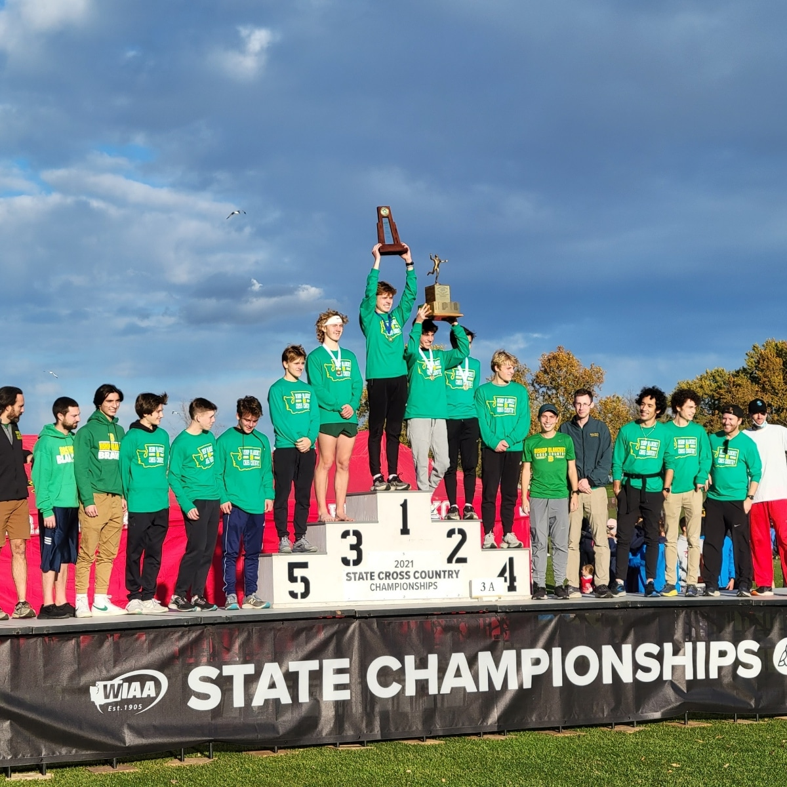
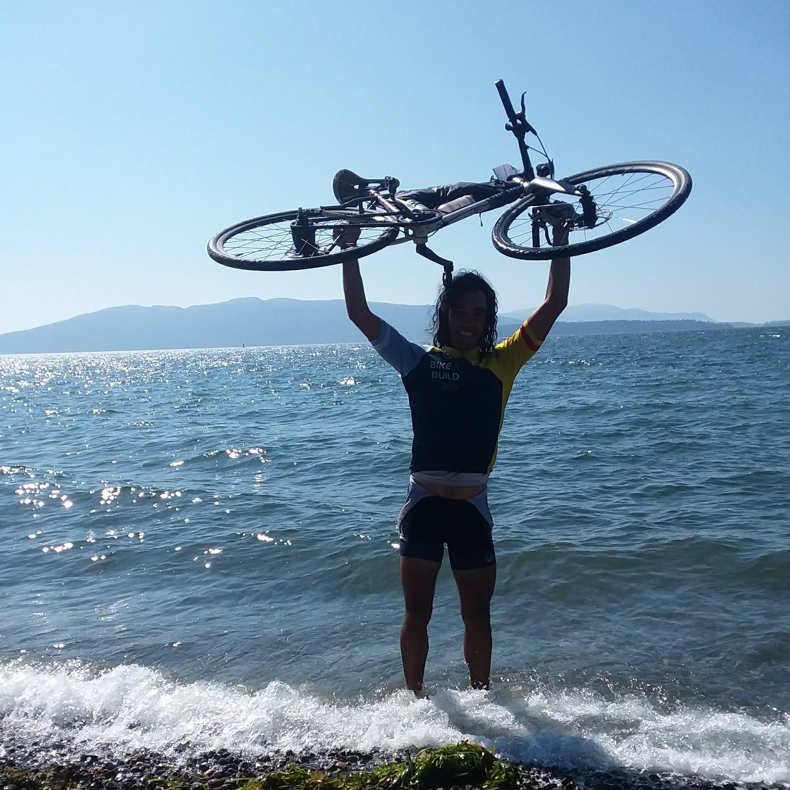

-

New Chapter: App Academy
October 2022 - Present
Starting this coming October, I will be embarking on a new adventure by joining App Academy to become a full-stack software engineer.
Leaving Blanchet was one of the hardest decisions I have ever made, but ultimately worthwhile as I set out to pursue my newest dream. This dream had been born out of multiple reasons: a passion for problem solving in a new environment, a need to develop a wider skill set that will allow me to work in remote locations, and a desire to test out my talent in design. Back in the summer of 2020 when I was in between teaching jobs, I had come across App Academy’s open curriculum and was immediately impressed by its thoroughness and level of engagement. I found myself quickly learning new programming languages and seeking out new coding challenges. Most importantly, as I kept coding I realized I was having fun. This experience left a lasting impression on me, and completing A/a’s program became a dream that one day I wanted to realize. Furthermore, all of my past experiences have taught me that no matter how challenging it might be, any dream is always worth pursuing.
I am dedicating this next chapter of my life towards a new vision of my own future. If you’d like to reach out to me as I embark on this journey, feel free to Contact me through this page or dm me on Linkedin or IG . -

Bishop Blanchet High School: Go Bears!
Mathematics Instructor, August 2020 - January 2022
In the summer of 2020, I was able to turn hardship into opportunity upon arriving back home to live in Seattle for the first time in almost 9 years. Bishop Blanchet, a high school less than two miles away from the one I graduated from, gave me the opportunity to teach as a full time instructor.
This was it, I had finally made it in my profession in the community I grew up in. Although the times were difficult due to the circumstances of online teaching, I felt like I had found a new strength being able to reconnect with students from the same background as me. Also even though the circumstances were like none I had ever faced before, I felt prepared as I had just come from an environment where I had to adapt to overcome adversity. During my year and a half at Blanchet I was able to guide students through courses in geometry and calculus, and make connections with students in place of the interactions they would normally have in a school environment. Also as an assistant coach for track and cross country, I had the pleasure of being a part of a boy's team that won four straight league titles (and counting) and one state title. I also helped bring back the school's chess club upon returning to in person learning, which helped me form even stronger connections with the student body I served. After so many years away from home, and in a time where I was around so many unfamiliar faces, I was more than happy to be welcomed back to my home area and give back to the community that had raised me into the person I am today. Thank you Blanchet, go Bears! -

Quantum Scholars: Teach in England
Mathematics Instructor, September 2019 - May 2020
With my studies behind me and a desire to keep adventuring, landing a teaching job in England through the Quantum Scholars program was another once in a lifetime opportunity. Throughout all of college I had worked to become a teacher, and that work was finally taking me places I had never imagined traveling to.
While the nine months I spent teaching just outside of London still feel like a dream, I cherish my experience during that time. This is because of the obstacles that I faced, and how I responded to the adversity of those times. The biggest obstacle faced was learning how to work through imposter syndrome from day 1. Although I had experienced the teacher's life during my studies, I quickly realized how much of my teaching strength had come from my ability to connect with students through having a shared background. In the UK, this strength became my biggest obstacle. Furthermore, having just come from the ruggedness of a cross country bike trip less than a week before the first day of school, adjusting to the formalities of the British classroom felt like being an alien from a different planet. Despite this challenge, I gave all of my energy each day to be the best teacher I could and made positive connections with each of my coworkers who did the same. From them, I learned what it truly meant to be dedicated to a craft, and over time I improved my ability to work with them as part of a team and how to operate in a school system that was completely foreign to me.
Although my experience was cut short by COVID, I will never forget the connections made in the UK. This experience teaching in another country has given me the confidence to succeed in any situation. -

Bike and Build!
NUS19 Rider, June 2019 - August 2019
Obsessed with adventure after college, I took it upon myself to continue exploring my passions to new lengths. After spending a couple of years of teaching in the local Bellingham community I embarked on a new adventure, Bike & Build.
Biking across the U.S had always been in the back of my mind since hearing my grandparents talk about the past possibility of doing it in their youth. Learning about Bike & Build from a friend in college made me realize I had the opportunity to actually do it. Every year the organization had been gatherin young adults in service-oriented cycling trips to raise money and awareness for the affordable housing cause. Outside of having a passion for cycling, seeing the rise of homelessness in my local community motivated me to contribute to the cause of providing affordable housing to those in need. Two and half months of travel and 4,000 miles later, me and a group of twenty five other like minded and crazy individuals accomplished our goal and raised over $30,000 dollars for AH organizations across the U.S.
Apart from just increasing my lung capacity and giving my leg muscles a little more definition, Bike & Build helped me form lifetime friendships and gave me an unforgettable experience in community outreach. It was also the fulfillment of a lifelong dream. -

Western Washington University
B.S in Mathematics, earned 2015
MIT in Secondary Education, earned 2017
I am eternally grateful for the time I was able to spend at Western. The six years I spent during my undergrad and graduate studies fueled me to explore my passions, pushed me to expand, challenge, and adjust my worldview, and allowed me seek out my place in the world.
My undergraduate studies is when I began to really explore my passions as I sought out direction in life. For the first time I explored various and diverse fields of study, competed as a varsity athlete on Western’s track and field and cycling team, and began to form the beginning of many meaningful connections that shaped my life after college. Out of everything though, the biggest gift I was given during this time was the opportunity to explore my love for problem solving. Through the courses I took in mathematics and also at Fairhaven college, I developed my ability to think critically and creatively throughout my studies. I found my love for learning more than ever, and I decided to spend my graduate studies learning how to share the gift of learning with others by becoming a teacher. My final year where I studied as a student teacher pushed me to work harder than ever before as I dedicated all of my energy towards helping my students become better problem solvers. Although the work was tireless during these years, the reward of seeing others succeed was incomparable.
Western showed me what I love to do, gifted me with a love of helping others, and surrounded me with an abundance of inspiring peers who have helped shape me into the person I am today.